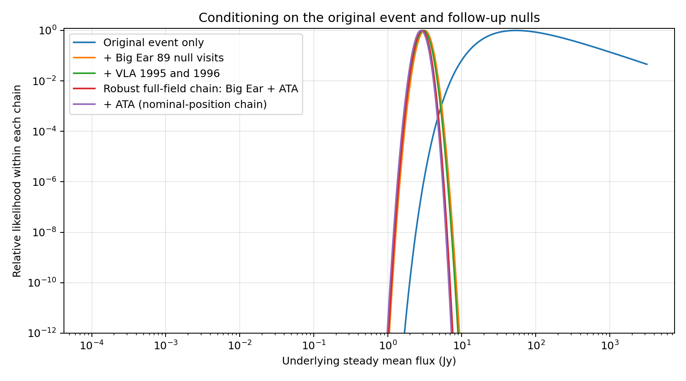
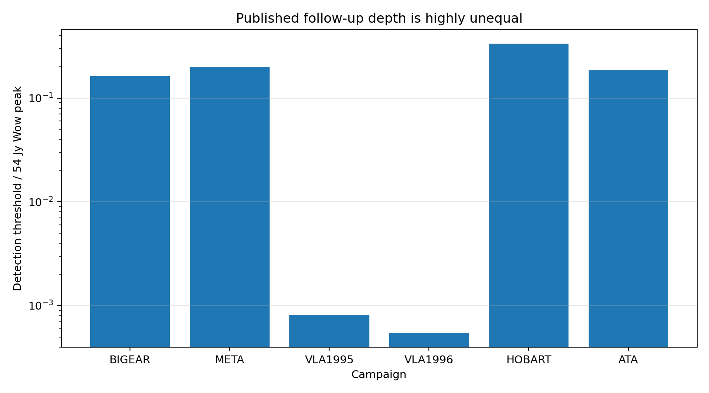
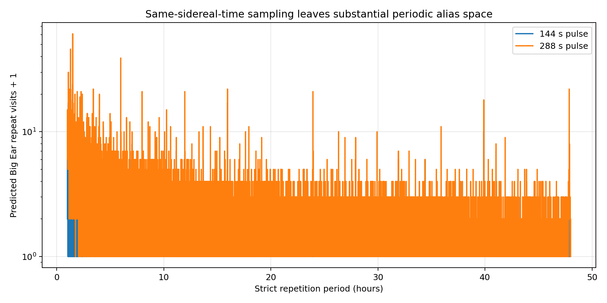
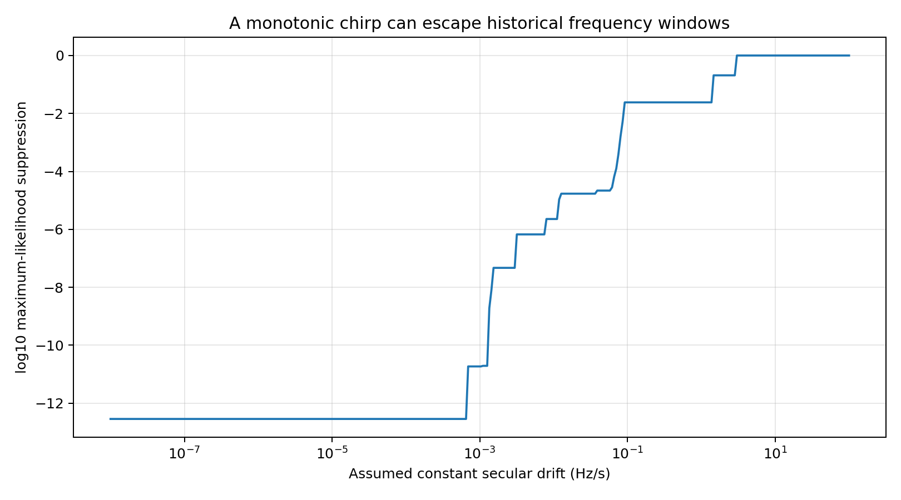

The Wow! Signal, Tested Mechanism by Mechanism
A reproducible, open-code elimination analysis of the famous 1977 radio event — five iterations of physics tests, campaign-by-campaign likelihoods, and every assumption exposed.
The surviving explanation for the Wow! signal must be intrinsically narrowband and non-persistent. Linear propagation — gravity, ionosphere, Doppler — cannot compress broadband emission into one 10 kHz channel, so any viable source was narrow to begin with. A maximum-likelihood chain over every published follow-up campaign (Big Ear's 89 null revisits, META, the VLA searches, Hobart, and the ATA campaign) suppresses a steady fixed-frequency compact source — even one hidden by the most generous scintillation statistics — by roughly twelve orders of magnitude.
What remains: an intrinsically narrow one-time transient, a low-duty-cycle repeater, a substantially frequency-mobile source, or a nonlinear instrumental artifact. Among natural candidates, transiently amplified hydrogen-line emission (Méndez et al. 2024, 2025) is the most concrete — it has a proposed physical mechanism and weaker archival analogues. The evidence supports that class of explanation. It does not yet identify the cause.
Each hypothesis class lives or dies by a named, quantified constraint.
| Hypothesis | Status | Decided by |
|---|---|---|
| Broadband source narrowed by linear propagation | Rejected | Bandwidth physics — linear channels cannot compress a spectrum |
| HF/OTH radar mixing to 1420 MHz at low order | Rejected | Arithmetic — 2nd/3rd-order sums top out near 90 MHz |
| Steady narrow celestial source | Rejected | Second-horn null + decades of follow-up non-detections |
| Steady compact source hidden by deep scintillation | Effectively rejected | Requires µas compactness and survives 130 nulls at ~10⁻⁹–10⁻¹²·⁵ likelihood |
| Low-duty-cycle / stochastic repeater | Live | ~80% of 1–48 h periods evade Big Ear's same-sidereal-time sampling |
| Nonlinear receiver intermod / asymmetric-sidelobe RFI | Live, constrained | Needs strong out-of-band tones plus 10–20 dB horn-coupling asymmetry |
| Intrinsically narrow one-time transient | Pass | Needs only beam-scale localization; clears the 172 s second-horn window |




These are mechanism-feasibility tests and likelihood comparisons under stated assumptions — not posterior probabilities, and not a new discovery. The analysis independently arrives at the same surviving explanation classes as the peer-reviewed literature, through a single auditable chain. Version history is preserved deliberately, including a corrected 25 dB radiometer-conversion error between v2 and v3.
Key references: Kraus (1979) · Gray (1994) · Gray & Marvel (2001) · Gray & Ellingsen (2002) · Harp et al. (2020) · Kipping & Gray (2022) · Méndez et al. (2024) · Méndez et al. (2025)